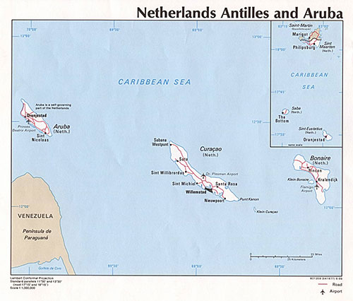

|
Aruba 
Aruba* is a destination and source country for women and men subjected to sex trafficking and forced labor. Those at greatest risk continue to be foreign women in Aruba’s commercial sex trade, and foreign men and women in the service and construction industries. Specific at-risk communities include Chinese men and women working in supermarkets, Indian men in the jewelry sector, and Caribbean and South American women in domestic service. A 2013 international organization report identified Aruba’s regulated and unregulated prostitution sectors, domestic workers, and small retail shops as the groups and sectors most susceptible to trafficking. This report also noted some children may be vulnerable to trafficking, including children providing sexual favors and/or companionship for money and gifts; third-party prostitution of children under the age of 18 is a form of human trafficking. The report also noted a trafficking case involving an Aruban girl studying in the Netherlands and media reports of Aruban women allegedly subjected to debt bondage in the Netherlands.
The Government of Aruba does not fully comply with the minimum standards for the elimination of trafficking; however, it is making significant efforts to do so. The government made progress in its anti-trafficking law enforcement efforts in 2013 by convicting two trafficking offenders, marking the first convictions under Aruba’s human trafficking statute. The government has yet to formalize standard operating procedures to guide all front-line responders in the proactive identification of trafficking victims and their referral for care; its approach to trafficking victim identification and protection remained ad hoc. The government did not initiate any new prosecutions during the reporting period.
Recommendations for Aruba:
Proactively identify trafficking victims among all vulnerable groups in Aruba, including domestic workers, migrants in construction and retail shops, and women in the sex trade and on adult entertainment visas; formalize standard operating procedures on the identification and referral of trafficking victims for all front-line responders; widely disseminate these procedures to encourage their use by immigration officials, NGOs, health workers, labor inspectors, and other officials; vigorously investigate and prosecute trafficking offenses, and convict and punish trafficking offenders; take steps to ensure that weekly medical check-ups for foreign women in the regulated prostitution sector include screening for trafficking indicators; systematically provide information to all immigrant populations upon their arrival in Aruba so they are familiar with their rights and where to go for help; provide the anti-trafficking committee with an independent budget and provide resources to enable the national coordinator to improve overall anti-trafficking response; and develop ways to educate clients of the sex trade about trafficking.
Prosecution
The Government of Aruba demonstrated significant progress in its anti-trafficking law enforcement efforts by convicting and sentencing two trafficking offenders in 2013. Aruba prohibits all forms of trafficking in persons through Articles 203a and 286a of its criminal code, which prescribe penalties for trafficking offenses ranging from four to 15 years’ imprisonment. These penalties are sufficiently stringent and are commensurate with those prescribed for other serious crimes, such as rape. In November 2013, an Aruban court convicted and sentenced two traffickers under Article 286a to five and four-and-a-half years’ imprisonment, respectively. The court convicted the trafficking offender who received four-and-a-half years’ imprisonment in absentia; the other perpetrator remains in prison.
During the year, the government reported the referral of five new suspected trafficking cases to the national anti-trafficking coordinator for further action. Of these cases, the government initiated one new trafficking investigation in Aruba involving one victim and at least two alleged offenders. Authorities referred another investigation to authorities in Bonaire. This represents an increase from the previous year, when the government did not launch any trafficking investigations. The government did not initiate any new prosecutions in 2013; two cases from previous years remained pending. The government did not report any investigations or prosecutions of public officials allegedly complicit in human trafficking-related offenses. In an apparent conflict of interest, security for sex trade establishments was reportedly sometimes provided by off-duty police officers, which experts note could inhibit law enforcement’s willingness to investigate allegations of human trafficking in the sex trade and could prevent victims from reporting trafficking crimes. Aruban police officers reportedly also frequent the services of women in prostitution, which could also deter victims from coming forward. The government reported that adequate funding and staffing for police remained an ongoing challenge. Aruba continued to incorporate human trafficking awareness into the police academy curriculum in 2013.
Protection
The Government of Aruba sustained its victim protection efforts in 2013. The government identified two potential trafficking victims during the reporting period; the government identified one potential victim in 2012. The potential victim identified in connection with the Bonaire case reportedly left Aruba before the case was reported. In the second case, the government provided the victim with emergency shelter, food, clothing, and financial and immigration assistance. The government had informal, verbal agreements with local NGOs and private sector accommodations for sheltering adult victims; the government lacked a formal referral mechanism to guide officials on the identification of trafficking victims and where to refer victims them for care. The government reported victims were permitted to leave shelters unchaperoned after conducting a risk assessment. Aruba’s anti-trafficking taskforce continued to provide law enforcement and social services officials with a checklist of the 10 most common signs of human trafficking. Although police and health department officials inspected bars in Aruba with regulated prostitution, these inspections did not include an assessment of trafficking indicators, nor were these checks conducted during prime hours of operation. Further, although labor inspectors reportedly inspected work sites where vulnerable migrants were present, they did not undertake screenings for trafficking indicators. The government reported that it encouraged trafficking victims to participate in investigations and prosecutions of trafficking offenders and did not charge victims for crimes committed as a direct result of being trafficked. According to Aruban officials, the government has the authority to provide identified trafficking victims relief from immediate deportation and work permits for a maximum of six months; however, it granted no such relief to any trafficking victims in 2013.
Prevention
The government sustained prevention efforts during the reporting period. The anti-trafficking taskforce, via its national coordinator, continued to coordinate Aruba’s anti-trafficking efforts and prevention activities in 2013. During the year, the taskforce began drafting a 2014-2018 action plan on human trafficking. The plan will incorporate key findings and recommendations from an expert regional report published in 2013 titled, “A Situational Analysis of Aruba’s Response to Human Trafficking.” The government partnered with IOM to produce the donor-funded report, which resulted in increased transparency about anti-trafficking efforts in Aruba. Aruba continued to promote a human trafficking awareness campaign, which included posters and flyers in four languages targeted to both victims and the general public and linked to a hotline with operators trained to assist trafficking victims. The government took no steps to reduce the demand for commercial sex acts during the reporting period. There were no known reports of child sex tourism occurring in Aruba or of Arubans participating in international sex tourism.
* Aruba is a semi-autonomous entity within the Kingdom of the Netherlands. The Kingdom Charter divides responsibility among the co-equal parts of the Kingdom based on jurisdiction. For the purpose of this report, Aruba is not a “country” to which the minimum standards for the elimination of trafficking in the Trafficking Victims Protection Act apply. This narrative reflects how Aruba would be assessed if it were a separate, independent country.

|